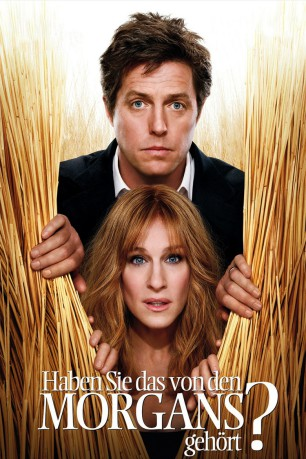

#5266 Haben Sie das von den Morgans gehört?
Alternativ: Did You Hear About the Morgans?
 
 IMDB-Wertung: 4.7 / 10
IMDB-Wertung: 4.7 / 10  Metascore: 0
Metascore: 0 
Seit drei Monaten lebt das einst glückliche Ehepaar Morgan getrennt, weil Jurist Paul Immobilienmaklerin Meryl mit einer anderen Frau betrogen hat. Alle folgenden Entschuldigungen und Liebesbeteuerungen von Paul kommen bei seiner Frau nicht an. Bis beide zufällig Zeugen eines Mordes werden und deswegen vom FBI zu ihrem eigenen Schutz auf dem Land untergebracht werden. Unter der Betreuung von Sheriff Wheeler und seiner Frau kommen die New Yorker Workaholics den speziellen Reizen des Lebens in Wyoming und dabei auch sich selbst wieder näher.
Jahr: 2009
Dauer: 103 Minuten
FSK: 6
Land: USA Studio: Columbia PicturesTonspuren: DTS - ,
Untertitel: Deutsch,
Auflösung: 1080p (1920x816) Größe: 5396 MB
Genre: Drama, Komödie, Liebe
Regisseur: Marc Lawrence
Drehbuch: Fredrik Backman
Soundtrack:
Darsteller:
 Hugh Grant als Paul Morgan
Hugh Grant als Paul Morgan Sarah Jessica Parker als Meryl Morgan
Sarah Jessica Parker als Meryl Morgan- Vincenzo Amato als Girard Rabelais
- Jesse Liebman als Adam Feller
 Elisabeth Moss als Jackie Drake
Elisabeth Moss als Jackie Drake Michael Kelly als Vincent
Michael Kelly als Vincent Seth Gilliam als U.S. Marshal Lasky
Seth Gilliam als U.S. Marshal Lasky- Kevin Brown als U.S. Marshal Henderson
- Steven Boyer als U.S. Marshal Ferber
 Sharon Wilkins als U.S. Marshal King
Sharon Wilkins als U.S. Marshal King Sam Elliott als Clay Wheeler
Sam Elliott als Clay Wheeler Mary Steenburgen als Emma Wheeler
Mary Steenburgen als Emma Wheeler- Kim Shaw als Nurse Kelly
 David Call als Doc D. Simmons
David Call als Doc D. Simmons Dana Ivey als Trish Pinger
Dana Ivey als Trish Pinger Wilford Brimley als Earl Granger
Wilford Brimley als Earl Granger Beth Fowler als Ma Simmons
Beth Fowler als Ma Simmons- Christopher Atwood als U.S. Marshal at Rodeo
- Laura Fremont als Dancer
- Brent Keast als Dancer
 Anthony Marciona als Dancer
Anthony Marciona als Dancer- Sarah Mitchell als Dancer
- Mandy Moore als Dancer
 Chris Moss als Dancer
Chris Moss als Dancer George Aloi als Benefit Attendee , uncredited
George Aloi als Benefit Attendee , uncredited James P. Anderson als Wyoming Shopping Cowboy , uncredited
James P. Anderson als Wyoming Shopping Cowboy , uncredited- Matt Berlin als FBI Agent , uncredited
 Peter Conboy als Cowboy , uncredited
Peter Conboy als Cowboy , uncredited- Maria Diaz als Benefit Attendee , uncredited
- Storm Garner als Columbia Law Student , uncredited
- Ronald E. Giles als Limping Store Employee , uncredited
- Billy Griffith als Forenski's Bodyguard , uncredited
- Ann-Marie Jordan als The Benefit Greeter , uncredited
 William James Kelly als Gala Fundraiser Attendee , uncredited
William James Kelly als Gala Fundraiser Attendee , uncredited Daniel Knight als FBI Agent in Charge , uncredited
Daniel Knight als FBI Agent in Charge , uncredited- Frosty Lawson als Affluent Fundraiser , uncredited
 Will MacAdam als Gun Salesman , uncredited
Will MacAdam als Gun Salesman , uncredited- J. T. O'Connor als New Yorker , uncredited
 Chris Ranney als US Marshal , uncredited
Chris Ranney als US Marshal , uncredited- Jay Santiago als Diner at Daniel Restaurant , uncredited
- Anne Sergi als Rodeo Teenager , uncredited
 J. Nathan Simmons als Hunter , uncredited
J. Nathan Simmons als Hunter , uncredited Uzimann als Limousine Driver , uncredited
Uzimann als Limousine Driver , uncredited- Mark Vincent als Pilot / Captain , uncredited
 Z. Ray Wakeman als Wyoming Rancher , uncredited
Z. Ray Wakeman als Wyoming Rancher , uncredited- Natalia Klimas als Monique Rabelais
- Sándor Técsy als Anton Forenski
- Gracie Lawrence als Lucy Granger
- Bobbie Bates als Dancer
- Carol J. Connors als Dancer
Datei: X:\2009(G-M)\Haben Sie das von den Morgans gehört (2009, FSK6, 1920x816).mkv seit 06.01.2017
Festplatte: HD 2009(G-Z)-2010(A-F)
 Es gibt insgesamt 82 Filme in der Gruppe '2009(G-M)'
Es gibt insgesamt 82 Filme in der Gruppe '2009(G-M)'